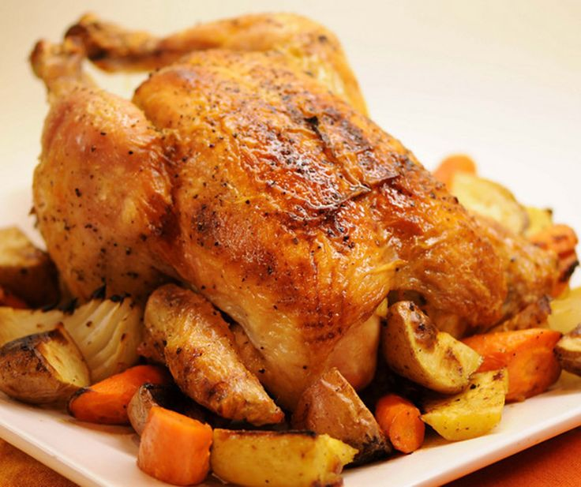

Frango Assado com Legumes
Ingredientes:
- 1 kg de frango
- 2 cenouras
- 2 batatas
- Alho, sal e pimenta a gosto
- Ervas de sua preferência (alecrim, tomilho)
Modo de Preparo:
- Tempere o frango com sal, pimenta, alho e as ervas.
- Descasque e corte as cenouras e batatas em pedaços.
- Em uma assadeira, coloque o frango e os legumes.
- Leve ao forno a 180°C por aproximadamente 1 hora, ou até o frango estar bem assado.